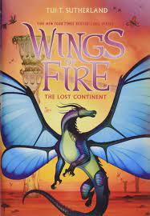

Blue the SilkWing is content. Life in his Hive is safe; he loves
his family; he has enough to eat. And Pantala has been at peace for as
long as he can remeber - SilkWings and HiveWings live and work together
in harmony, and because they stay vigilant, no one has seen a dangerous
LeafWing in years.
Now that Blue's sister, Luna, is undergoing her Metamorohasis, Blue
knows that thinks are going to change. Luna will have her wings and her silk,
be assigned a partner and work order, and move to another Hive. A few days
later, Blue's own wings and silk come in.
But nothing could prepare Blue for what happens when Luna's wings
start to grow. Suddenly his world is turned upside down, throwing him
imto dangers he never knew existed. Pantala isn't as peaceful as it seems,
and Blue isn't safe. Whether he's ready or not, it's time to adapt - and
fight for his life.

Book 12
The Hive Queen
The truth is a powerful weapon.
Growing up in the hives, Cricket has always had a million questions.
Why are trees forbidden, even in art? Why do her parents seem to hate her?
And the biggest, most dangerous and secret question of all: Why is
Cricket immune to Queen Wasp's powers? Whenever the queen takes control
of all the HiveWings, speaking through their mouths and seeing through
their eyes, Cricket has to hide, terrified of being discovered.
Now she's hiding again, wanted for stealing the Book of Clearsight
along with her new SilkWing friends, Blue and Swordtail, and the fierce
LeafWing, Sundew. The fugitives need answers, and fast, in order to
prevent a LeafWing attack. But Cricket has more questions then ever. How
can she stay hidden and discover the queen's deadliest secret? And if
she does succeed - can a powerless dragonet really do anything to topple
a regime and stop a war?
Book13
The Poison Jungle
Some secrets are deadly.
It's no secret that Sundew wants to destroy the HiveWings. It's her
life's mission to exact revenge on the tribe that tried to wipe out
the LeafWings and ripped every tree from the surface of Pantala.
Every tree, that is, except those in the wild and dangerous Poison
Jungle, where the surviving LeafWings have been hinding since the war - and
waiting for a dragon like Sundew, who is uniquely qualified to bring
down the Hives.
But secrets hide in the trees, too - some that Sundew is keeping, and
some that she's only beginning to discover. Now that a new war is upon them,
Sundew and her friends must unearth the darkest mystery in the jungle - even
if what they find has the power to destroy them all.
Book 14
The Dangerous Gift
A wall can't protect them anymore ...
Snowfall didn't expect to be queen of the IceWings at such a
young age, but now that she is, she's going to be the best queen EVER.
All she has to do is keep her tribe within IceWing territory, where
it's safe - while keeping every other tribe out, where they belong.
It's a perfect and simple plan, backed up by the Ice Cliff wall
and every bit of IceWing magic Snowfall can gather. Perfect, that is, until
a storm of unidentified dragons flies in from the ocean, looking for asylum.
The foreigners are completely strange and, Snowfall is certain,
utterly untrustworthy. But as she escorts the miserable new
tribes out of her kingdom, the young queen is forced to reconsider
her plan. Maybe she can only keep her tribe safe ... if she's
willing to risk everything.